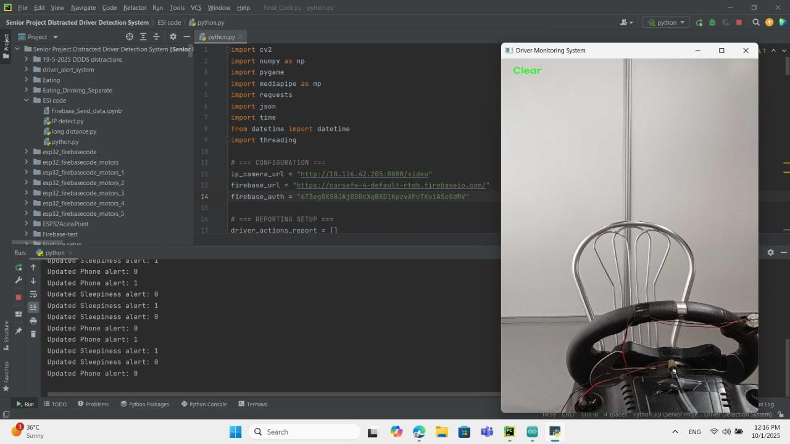

SOC & Threat Detection Home Lab | Core Visibility & Threat Hunting | Phase 1
- Captured 80,000+ logs from the Wazuh dashboard.
- Recorded 31 critical vulnerabilities.
- Mapped the project findings to the MITRE ATT&CK framework.

